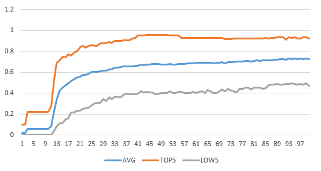

Implementing an Image Classification Application of Cross-device Federated Learning (x86)¶

Federated learning can be divided into cross-silo federated learning and cross-device federated learning according to different participating clients. In the cross-silo federated learning scenario, the clients participating in federated learning are different organizations (for example, medical or financial) or data centers geographically distributed, that is, training models on multiple data islands. The clients participating in the cross-device federated learning scenario are a large number of mobiles or IoT devices. This framework will introduce how to use the network LeNet to implement an image classification application on the MindSpore cross-silo federated framework, and provides related tutorials for simulating to start multi-client participation in federated learning in the x86 environment.
Before you start, check whether MindSpore has been correctly installed. If not, install MindSpore on your computer by referring to Install on the MindSpore website.
Preparation¶
We provide Federated Learning Image Classification Dataset FEMNIST and the device-side model file of the .ms format for users to use directly. Users can also refer to the following tutorials to generate the datasets and models based on actual needs.
Generating a Device-side Model File¶
Define the network and training process.
For the definition of the specific network and training process, please refer to Beginners Getting Started.
Export a model as a MindIR file.
The code snippet is as follows:
import argparse import numpy as np import mindspore as ms import mindspore.nn as nn def conv(in_channels, out_channels, kernel_size, stride=1, padding=0): """weight initial for conv layer""" weight = weight_variable() return nn.Conv2d( in_channels, out_channels, kernel_size=kernel_size, stride=stride, padding=padding, weight_init=weight, has_bias=False, pad_mode="valid", ) def fc_with_initialize(input_channels, out_channels): """weight initial for fc layer""" weight = weight_variable() bias = weight_variable() return nn.Dense(input_channels, out_channels, weight, bias) def weight_variable(): """weight initial""" return ms.common.initializer.TruncatedNormal(0.02) class LeNet5(nn.Cell): def __init__(self, num_class=10, channel=3): super(LeNet5, self).__init__() self.num_class = num_class self.conv1 = conv(channel, 6, 5) self.conv2 = conv(6, 16, 5) self.fc1 = fc_with_initialize(16 * 5 * 5, 120) self.fc2 = fc_with_initialize(120, 84) self.fc3 = fc_with_initialize(84, self.num_class) self.relu = nn.ReLU() self.max_pool2d = nn.MaxPool2d(kernel_size=2, stride=2) self.flatten = nn.Flatten() def construct(self, x): x = self.conv1(x) x = self.relu(x) x = self.max_pool2d(x) x = self.conv2(x) x = self.relu(x) x = self.max_pool2d(x) x = self.flatten(x) x = self.fc1(x) x = self.relu(x) x = self.fc2(x) x = self.relu(x) x = self.fc3(x) return x parser = argparse.ArgumentParser(description="export mindir for lenet") parser.add_argument("--device_target", type=str, default="CPU") parser.add_argument("--mindir_path", type=str, default="lenet_train.mindir") # the mindir file path of the model to be export args, _ = parser.parse_known_args() device_target = args.device_target mindir_path = args.mindir_path ms.set_context(mode=ms.GRAPH_MODE, device_target=device_target) if __name__ == "__main__": np.random.seed(0) network = LeNet5(62) criterion = nn.SoftmaxCrossEntropyWithLogits(sparse=False, reduction="mean") net_opt = nn.Momentum(network.trainable_params(), 0.01, 0.9) net_with_criterion = nn.WithLossCell(network, criterion) train_network = nn.TrainOneStepCell(net_with_criterion, net_opt) train_network.set_train() data = ms.Tensor(np.random.rand(32, 3, 32, 32).astype(np.float32)) label = ms.Tensor(np.random.randint(0, 1, (32, 62)).astype(np.float32)) ms.export(train_network, data, label, file_name=mindir_path, file_format='MINDIR') # Add the export statement to obtain the model file in MindIR format.
The parameter
--mindir_pathis used to set the path of the generated file in MindIR format.Convert the MindIR file into an .ms file that can be used by the federated learning device-side framework.
For details about model conversion, see Training Model Conversion Tutorial.
The following is an example of model conversion:
Assume that the model file to be converted is
lenet_train.mindir. Run the following command:./converter_lite --fmk=MINDIR --trainModel=true --modelFile=lenet_train.mindir --outputFile=lenet_train
If the conversion is successful, the following information is displayed:
CONVERTER RESULT SUCCESS:0
This indicates that the MindSpore model is successfully converted to the MindSpore device-side model and the new file
lenet_train.msis generated. If the conversion fails, the following information is displayed:CONVERT RESULT FAILED:
The generated model file in
.msformat is the model file required by subsequent clients.
Simulating Multi-client Participation in Federated Learning¶
Preparing a Model File for the Client¶
This example uses lenet on the device-side to simulate the actual network used, wheredevice-side model file in .ms format of lenet. As the real scenario where a client contains only one model file in .ms format, in the simulation scenario, multiple copies of the .ms file need to be copied and named according to the lenet_train{i}.ms format, where i represents the client number, since the .ms file has been automatically copied for each client in run_client_x86.py.
See the copy_ms function in startup script for details.
Starting the Cloud Side Service¶
Users can first refer to cloud-side deployment tutorial to deploy the cloud-side environment and start the cloud-side service.
Starting the Client¶
Before starting the client, please refer to the section Device-side deployment tutotial for deployment of device environment.
We provide a reference script run_client_x86.py, users can set relevant parameters to start different federated learning interfaces.
After the cloud-side service is successfully started, the script providing run_client_x86.py is used to call the federated learning framework jar package mindspore-lite-java-flclient.jar and the corresponding jar package quick_start_flclient.jar of the model script, obtaining in Compiling package Flow in device-side deployment to simulate starting multiple clients to participate in the federated learning task.
Taking the LeNet network as an example, some of the input parameters in the run_client_x86.py script have the following meanings, and users can set them according to the actual situation:
--fl_jar_pathFor setting the federated learning jar package path and obtaining x86 environment federated learning jar package, refer to Compile package process in device-side deployment.
--case_jar_pathFor setting the path of jar package
quick_start_flclient.jargenerated by model script and obtaining the JAR package in the x86 environment, see Compile package process in device-side deployment.--lite_jar_pathFor setting the path of jar package
mindspore-lite-java.jarof mindspore lite, which is located inmindspore-lite-{version}-linux-x64.tar.gz. For x86 environment federated learning jar package acquisition,, see Compile package process in device-side deployment.--train_datasetThe root path of the training dataset in which the LeNet image classification task is stored is the training data.bin file and label.bin file for each client, e.g.
data/femnist/3500_clients_bin/.--flNameSpecifies the package path of model script used by federated learning. We provide two types of model scripts for your reference (Supervised sentiment classification task, Lenet image classification task). For supervised sentiment classification tasks, this parameter can be set to the package path of the provided script file AlBertClient.java, like as
com.mindspore.flclient.demo.albert.AlbertClient. For Lenet image classification tasks, this parameter can be set to the package path of the provided script file LenetClient.java, like ascom.mindspore.flclient.demo.lenet.LenetClient. At the same time, users can refer to these two types of model scripts, define the model script by themselves, and then set the parameter to the package path of the customized model file ModelClient.java (which needs to inherit from the class Client.java).--train_model_pathSpecifies the training model path used for federated learning. The path is the directory where multiple .ms files copied in the preceding tutorial are stored, for example,
ms/lenet. The path must be an absolute path.--domain_nameUsed to set the url for device-cloud communication. Currently, https and http communication are supported, and the corresponding formats are like as: https://……, http://……. When
if_use_elbis set to true, the format must be: https://127.0.0.1:6666 or http://127.0.0.1:6666, where127.0.0.1corresponds to the ip of the machine ip providing cloud-side services (corresponding to the cloud-side parameter--scheduler_ip), and6666corresponds to the cloud-side parameter--fl_server_port.Note 1: When this parameter is set to
http://......, it means that HTTP communication is used, and there may be communication security risks.Note 2: When this parameter is set to
https://......, it means the use of HTTPS communication. At this time, SSL certificate authentication must be performed, and the certificate path needs to be set by the parameter-cert_path.--taskSpecifies the type of the task to be started.
trainindicates that a training task is started.inferenceindicates that multiple data inference tasks are started.getModelindicates that the task for obtaining the cloud model is started. Other character strings indicate that the inference task of a single data record is started. The default value istrain. The initial model file (.ms file) is not trained. Therefore, you are advised to start the training task first. After the training is complete, start the inference task. (Note that the values of client_num in the two startups must be the same to ensure that the model file used byinferenceis the same as that used bytrain.)--batch_sizeSpecifies the number of single-step training samples used in federated learning training and inference, that is, batch size. It needs to be consistent with the batch size of the input data of the model.
--client_numSpecifies the number of clients. The value must be the same as that of
start_fl_job_cntwhen the server is started. This parameter is not required in actual scenarios.
If you want to know more about the meaning of other parameters in the run_client_x86.py script, you can refer to the comments in the script.
The basic startup instructions of the federated learning interface are as follows:
rm -rf client_*\
&& rm -rf ms/* \
&& python3 run_client_x86.py \
--fl_jar_path="federated/mindspore_federated/device_client/build/libs/jarX86/mindspore-lite-java-flclient.jar" \
--case_jar_path="federated/example/quick_start_flclient/target/case_jar/quick_start_flclient.jar" \
--lite_jar_path="federated/mindspore_federated/device_client/third/mindspore-lite-2.0.0-linux-x64/runtime/lib/mindspore-lite-java.jar" \
--train_data_dir="federated/tests/st/simulate_x86/data/3500_clients_bin/" \
--eval_data_dir="null" \
--infer_data_dir="null" \
--vocab_path="null" \
--ids_path="null" \
--path_regex="," \
--fl_name="com.mindspore.flclient.demo.lenet.LenetClient" \
--origin_train_model_path="federated/tests/st/simulate_x86/ms_files/lenet/lenet_train.ms" \
--origin_infer_model_path="null" \
--train_model_dir="ms" \
--infer_model_dir="ms" \
--ssl_protocol="TLSv1.2" \
--deploy_env="x86" \
--domain_name="http://10.113.216.40:8010" \
--cert_path="CARoot.pem" --use_elb="false" \
--server_num=1 \
--task="train" \
--thread_num=1 \
--cpu_bind_mode="NOT_BINDING_CORE" \
--train_weight_name="null" \
--infer_weight_name="null" \
--name_regex="::" \
--server_mode="FEDERATED_LEARNING" \
--batch_size=32 \
--input_shape="null" \
--client_num=8
Note that the related path in the startup command must give an absolute path.
The above commands indicate that eight clients are started to participate in federated learning. If the startup is successful, log files corresponding to the eight clients are generated in the current folder. You can view the log files to learn the running status of each client:
./
├── client_0
│ └── client.log # Log file of client 0.
│ ......
└── client_7
└── client.log # Log file of client 7.
For different interfaces and scenarios, you only need to modify specific parameter values according to the meaning of the parameters, such as:
Start federated learning and training tasks: SyncFLJob.flJobRun()
When
--taskinBasic Start Commandis set totrain, it means to start the task.You can use the command
grep -r "average loss:" client_0/client.logto view the average loss of each epoch ofclient_0during the training process. It will be printed as follows:INFO: <FLClient> ----------epoch:0,average loss:4.1258564 ---------- ......
You can also use the command
grep -r "evaluate acc:" client_0/client.logto view the verification accuracy of the model after the aggregation in each federated learning iteration forclient_0. It will be printed like the following:INFO: <FLClient> [evaluate] evaluate acc: 0.125 ......
On the cloud side, the number of client group ids and algorithm type for unsupervised cluster index statistics can be specified by setting the ‘cluster_client_num’ parameter and ‘eval_type’ parameter of yaml configuration file. The ‘metrics.json’ statistical file generated on the cloud side can query the unsupervised indicator information:
"unsupervisedEval":0.640 "unsupervisedEval":0.675 "unsupervisedEval":0.677 "unsupervisedEval":0.706 ......
Start the inference task: SyncFLJob.modelInference()
When
--taskinBasic Start Commandis set toinference, it means to start the task.You can view the inference result of
client_0through the commandgrep -r "the predicted labels:" client_0/client.log:INFO: <FLClient> [model inference] the predicted labels: [0, 0, 0, 1, 1, 1, 2, 2, 2] ......
Start the task of obtaining the latest model on the cloud side: SyncFLJob.getModel()
When
--taskinBasic Start Commandis set toinference, it means to start the task.If there is the following content in the log file, it means that the latest model on the cloud side is successfully obtained:
INFO: <FLClient> [getModel] get response from server ok!
Stop the client process¶
For details, see the finish.py script. The details are as follows:
The command of stopping the client process:
python finish.py --kill_tag=mindspore-lite-java-flclient
The parameter --kill_tag is used to search for the keyword to kill the client process. You only need to set the special keyword in --jarPath. The default value is mindspore-lite-java-flclient, that is, the name of the federated learning JAR package. The user can check whether the process still exists through the command ps -ef |grep "mindspore-lite-java-flclient".
Experimental results of 50 clients participating in federated learning and training tasks.
Currently, the 3500_clients_bin folder contains data of 3500 clients. This script can simulate a maximum of 3500 clients to participate in federated learning.
The following figure shows the accuracy of the test dataset for federated learning on 50 clients (set server_num to 16).

The total number of federated learning iterations is 100, the number of epochs for local training on the client is 20, and the value of batchSize is 32.
The test accuracy in the figure refers to the accuracy of each client test dataset on the aggregated model on the cloud for each federated learning iteration:
AVG: average accuracy of 50 clients in the test dataset for each federated learning iteration.
TOP5: average accuracy of the 5 clients with the highest accuracy in the test dataset for each federated learning iteration.
LOW5: average accuracy of the 5 clients with the lowest accuracy in the test dataset for each federated learning iteration.